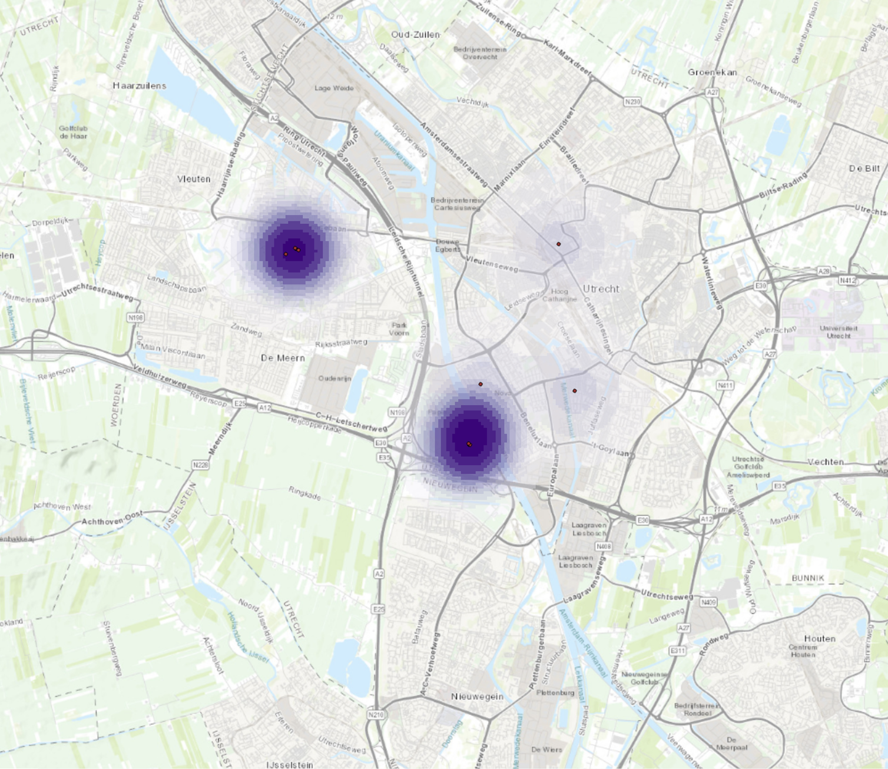

Vector Operations
Vector data, comprising points, lines, and polygons, is crucial for mapping and spatial analysis. It enables representation and analysis of geographical features, such as the distribution of trees across a city. This data type allows for precise, scalable mapping, making it vital for targeted urban planning and environmental policy decisions.

The data for this map was sourced from publicly available vector data provided by the government of the Netherlands. I specifically focused on the distribution of trees across the city of Utrecht. The map divides Utrecht into neighborhoods, with darker areas indicating a higher density of trees. As a result, Binnenstadt is clearly shown to have the fewest trees, represented by a white area on the choropleth map, indicating a low tree count. Conversely, Vleuten-De Meern, shown in dark green on the left side of the map, has the highest tree density.
In the next step, I focused on almond trees to identify their areas of highest density, depicted as red points on the map. The analysis revealed that Leidsche Rijn has the highest concentration, with eight almond trees. This approach illustrates how specific tree types can be identified and analysed across different areas to inform targeted policy decisions.
The Kernel Density is illustrated above by pruple points. It involves estimating the density of trees over a geographic area based on point data representing individual trees. This technique calculates the density by placing a smooth, continuous surface (a kernel function) over each tree point. The result is a raster map that shows areas of varying tree density, highlighting regions with high concentrations of trees such as around the Maximapark and Amelisweerd in Utrecht, shown in the map above. This method is useful for forest management, biodiversity conservation, and urban planning, helping to visualise and analyse spatial patterns of tree distribution.